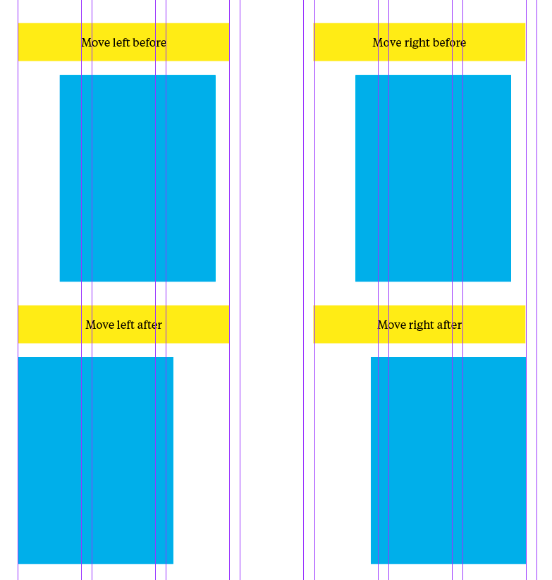
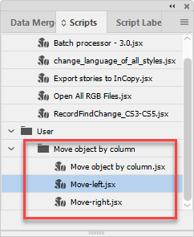

Move object by column
The original scenario (suggested by the client):
Here are two scripts that have the same concept.
Perhaps the script can reference column guides?
Move object(s) to the column to the right
With one or more object selected,
Script references nearest column (X coordinate) and moves object(s) from right side of the object(s) to that column.
Here are the X coordinates to snap the object(s) when moving to the the right: 1.4398 in 2.5362 in 3.6326 in 4.7289 in 5.8253 in 6.9217 in 8.0181 in 9.1145 in 10.2109 in 11.3072 in 12.4036
Move object(s) to the column to the left
With one or more object selected,
Script references nearest column (X coordinate) and moves object(s) from left side of the object(s) to that column.
Here are the X coordinates to snap the object(s) when moving to the the left: 0.5 in 1.5964 in 2.6928 in 3.7892 in 4.8855 in 5.9819 in 7.0783 in 8.1747 in 9.2711 in 10.3675 in 11.4638 in 12.5602 in.
The final implementation:
All the job is done by the main script — Move object by column.jsx — which is triggered by two other small scripts using the doScript() command which uses their file names as the only argument.
In this way, I don’t have to write and maintain two or more almost identical scripts. I just can run it from a number of small scripts sending the necessary parameter. Quite an elegant solution in my opinion!
The script automatically detects the number of columns on the page, their width and the gap between them making the necessary calculations so it is not bound to specific column locations in a certain document as the client originally suggested: it should work in any document. Obviously, the object are not moved beyond the type area.
You can select one or more objects that have bounds. They will be aligned using visual bound which is useful for objects that have thick strokes.

All three scripts should be located in the same folder.

Click here to download the script.
See also a similar Move object by horizontal guide script.
Go back to the main Scripts for L'Express de Toronto Inc. page